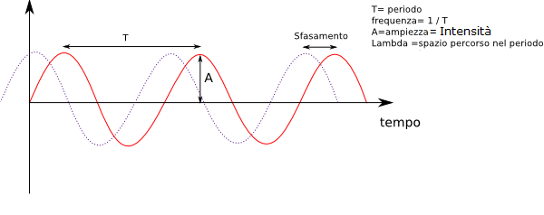

Il suono
Il suono è un fenomeno acustico che consiste nella produzione di una vibrazione, da parte di un corpo elastico, che genera onde che arrivano al nostro orecchio generalmente per mezzo dell'aria. Di un suono si può definire, la frequenza, il numero di vibrazioni prodotte in un secondo. Il suono del "LA" centrale, corrisponde ad un numero di onde al secondo pari a 440. La frequenza condiziona quindi l'altezza del suono, infatti possiamo delineare la seguente caratteristica:
- Il suono è più acuto, più il numero di vibrazioni è maggiore;
- Il suono è più grave, se il numero di vibrazioni è inferiore.
L' intensità identifica l'ampiezza delle vibrazioni e determina il volume, secondo questa regola:
- Quanto è maggiore è l'ampiezza, quanto più alto è il volume.

Il timbro caratteristico di ogni suono, dipende dal numero e dall'intensità dei singoli suoni armonici, generati dal suono fondamentale e quindi dalla forma dell'onda.
Il suono quindi è la base per fare musica con qualsiasi tipo di strumento musicale, fermo restando che la musica generata sia piacevole. Il termine piacevole deriva da un fenomino acustico chiamato "battimenti"; questi battimenti sono costituiti da onde sonore generate, che si sovrappongono in modo inperfetto. Dal concetto di battimenti deriva quello di consonanza e dissonanza, infatti: si dicono dissonanti, suoni che generano battimenti tra loro.
L'uso dei suoni dissonanti talvolta è usato per dare più complessità al motivo musicale.